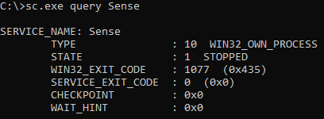
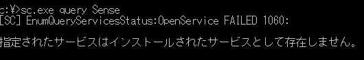
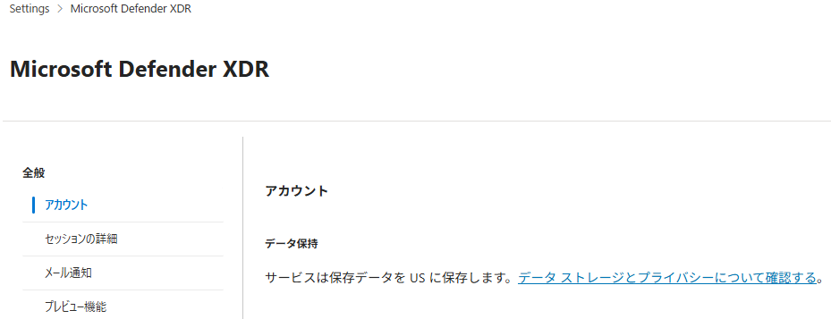
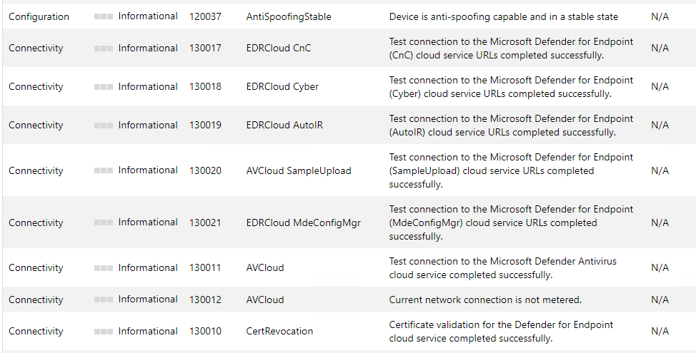
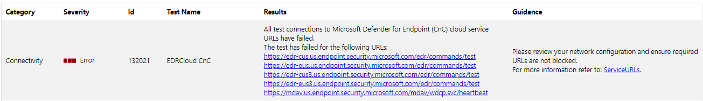
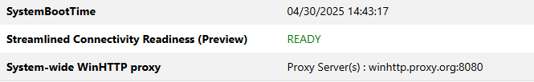
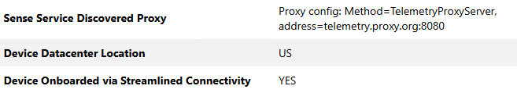
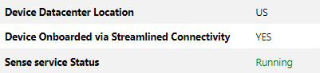

本記事では、Windows デバイスの Microsoft Defender for Endpoint(MDE) へのオンボード操作を実施したものの、Microsoft Defender ポータルの [アセット]>[デバイス] ページにデバイスが登録されない場合の一般的なトラブルシューティング手順をご案内します。
本記事では、MDE の最小要件を満たす Windows 10 / 11 および Windows Server 2016 / 2019 / 2022 / 2025 を対象としています。
参考情報：Microsoft Defender for Endpoint の最小要件 | Microsoft Learn
本記事の内容
- 一般的なトラブルシューティングステップ
- Sense サービスの実行ステータスを確認する
- 端末が MDE の通信要件を満たすことを確認する
- 端末の通信テストを行う
- 問題が解消されない場合の確認ポイント
- まとめ
一般的なトラブルシューティングステップ
Windows デバイスの MDE にオンボード操作を実施したものの、Microsoft Defender ポータルの [アセット]>[デバイス] ページにデバイスが登録されない問題が発生した場合の一般的なトラブルシューティング手順は以下の通りです。
事前に、オンボードデバイスが MDE の最小要件 を満たしていることを確認します。
関連する MDE および MDAV のコンポーネントが最新バージョンに更新されていることを確認します。(詳細については エージェントプログラムの更新 をご参照ください)
[Sense サービスの実行ステータスを確認する](#Sense サービスの実行ステータスを確認する) の手順で、MDE へのオンボード操作を実行した端末でサービスが起動していることを確認します。
MDE のサービス(Sense サービス) が正常に稼働していない場合、実施したオンボード手順に誤りがないことを確認の上、再オンボードを試します。
MDE のサービス(Sense サービス) が正常に稼働している場合、[端末が MDE の通信要件を満たすことを確認する](#端末が MDE の通信要件を満たすことを確認する) の手順で通信テストを行い、端末が MDE のクラウドサービスと正常に疎通できる構成であることを確認します。
上記のすべてを確認しても問題が解消しない場合、端末情報の削除と再オンボード の手順でデバイスの再オンボードをお試しください。
以下に、各手順の詳細についてご案内します。
Sense サービスの実行ステータスを確認する
MDE へのオンボード操作を実施したデバイスが Microsoft Defender ポータルに登録されない場合、まずは問題の発生した端末の Sense サービス(MDE のサービス) の稼働状況を確認します。
サービスの稼働状況は以下のコマンドを実行することで確認できます。
1 | sc.exe query Sense |
MDE へのオンボード操作が成功している場合、Sense サービスは自動的に起動するため、上記コマンドを実行することでサービスが実行中(STATE: 4 RUNNING) であることを確認することができます。
一方で、MDE へのオンボード操作が行われていない場合や、何らかの理由でオンボード操作に失敗した場合には、Sense サービスは停止中のままとなります。

Sense サービスは端末の情報を MDE のクラウドサービスと連携する機能を持つため、このサービスが停止している場合、対象の端末は Microsoft Defender ポータルにオンボード済みデバイスとして登録されません。
そのため、Sense サービスが起動していないことを確認した場合には、再度オンボード手順を実行するとともに、問題が継続する場合はオンボード手順に問題がないかを確認します。
オンボード操作を実施しても Sense サービスが起動しない場合
オンボード操作を再実行しても Sense サービスが起動しない場合、オンボード操作が端末で実行されているか否かや、オンボード操作時に何らかの問題が発生しているか否かを確認します。
- オンボードスクリプトを使用する場合
ローカルスクリプトやグループポリシー、Microsoft Endpoint Configuration Manager(MECM) を使用してオンボード操作を行う場合、以下の公開情報を参照してアプリケーションイベントログから問題の原因を調査します。
参考情報：スクリプトを使用してデプロイするときのオンボードのトラブルシューティング | Microsoft Learn
- Intune を使用する場合
また、Intune を使用してオンボード操作を行う場合、以下の公開情報の手順でトラブルシューティングを行います。
参考情報：Microsoft Intuneを使用したオンボードの問題のトラブルシューティング | Microsoft Learn
- Microsoft Defender for Cloud(MDfC) の MDE 統合機能を利用する場合
MDE 統合機能を利用したオンボードが行われない場合、対象のマシンに MDE.Windows 拡張機能がインストールされているか否かを確認します。
MDE.Windows 拡張機能がインストールされていない場合、以下の公開情報の内容を確認します。
参考情報：Microsoft Defender for Cloud で Defender for Endpoint 統合を有効にする | Microsoft Learn
Sense サービスが端末に存在しない場合
対象の端末には Sense サービスがインストールされていない場合、sc.exe query Sense コマンドを実行した際に「指定されたサービスはインストールされたサービスとして存在しません。」というエラーが出力されます。

- 問題が Windows Server 2016 で発生している場合
問題が発生している端末が Windows Server 2016 に該当する場合、インストールパッケージ(md4ws.msi) による統合エージェントがサーバーにインストールされていないか、何らかの理由でインストールに失敗している可能性があります。
Windows Server 2016 で問題が発生している場合は下記公開情報を参照いただき、サーバーに MDE 用の統合エージェントをインストールした後に再度オンボード操作を実施してください。
参考情報：Microsoft Defender for Endpointのオンボード エクスペリエンスを使用してサーバーをオンボードする | Microsoft Learn
参考情報：Windows Server 2012 R2 または Windows Server 2016 を MDE にオンボードする手順と確認ポイント
- 問題が Windows 11 で発生している場合
Windows 11 24H2 では OS のベースイメージから Sense サービスが削除されています。
そのため、以下のいずれかに該当する端末で MDE を利用するには、オンボード操作の前に Sense サービスを手動でインストールする必要があります。
- Windows 11 24H2 Home をインストールした後に、Pro や Enterprise などのエディションにアップグレードした場合
- ユーザーが購入したデバイスに OEM が必要な機能をインストールしていない場合
参考情報：KB5043950: 既知の問題Microsoft Defender for Endpoint - Microsoft サポート
Windows 11 24H2 以降のバージョンを使用する端末に Sense サービスがインストールされていない場合、管理者権限で起動したコマンドプロンプトで以下のコマンドを実行して Sense クライアントのインストールを行います。
1 | DISM /online /Add-Capability /CapabilityName:Microsoft.Windows.Sense.Client~~~~ |
上記のコマンドを実行して Sense サービスをインストールした後、OS を再起動してから再度オンボード操作を実施してください。
端末が MDE の通信要件を満たすことを確認する
オンボード操作後に端末の Sense サービスが正常に稼働しているにも関わらず Microsoft Defender ポータルにデバイス情報が登録されない問題が発生している場合、端末がインターネット経由での MDE のクラウドサービスへの接続に失敗している可能性が考えられます。
問題が発生している端末が MDE の通信要件を満たしているかについては、端末の通信テストを行う の項に記載の手順でテストを行うことができます。
テストの結果、端末の通信要件に問題が発生している可能性があることを確認した場合には、問題の解消のために、端末が MDE のオンボードに必要な通信要件を満たすように構成を変更する必要があります。
重要
MDE の稼働に必要な暗号化通信の復号はサポートされておりません。
そのため、ユーザーの環境で TLS(SSL) インスペクションのような HTTPS 通信を復号するシステムを利用する場合は、必ず MDE の通信要件にリストされている通信先を復号の対象から除外してください。
MDE の通信要件について
端末を MDE にオンボードする際に許可する必要がある通信先については、Microsoft Defender for Endpoint の合理化された接続 URL - 商用 および Microsoft Defender for Endpoint の標準接続 URL - 商用 にて公開しているページから確認することができます。
どのページに記載の URL を許可する必要があるかについては、ご利用中の端末をオンボードする際に選択した接続方式(標準 もしくは 合理化)によって決定されます。
標準および合理化オンボードが混在する環境の場合には、各ページに記載の URL をすべて許可します。
合理化オンボードの概要および最小要件については以下の公開情報を参照してください。
参考情報：Microsoft Defender for Endpointの合理化された接続を使用したデバイスのオンボード | Microsoft Learn
また、現在ご利用中の端末がどちらの接続方式を使用しているかについては、MDE Client Analyzer ツールを使用することで確認することができます。
参考情報：MDE Client Analyzer レポートから端末の接続方式を確認する方法
合理化された接続方式を使用する場合の通信要件(FQDN を使用する場合)
合理化された接続方式を使用する場合、Microsoft Defender for Endpoint の合理化された接続 URL - 商用 からアクセス可能なページに記載の通信先との接続を許可する必要があります。
Note
.endpoint.security.microsoft.com のようにワイルドカード() を含む FQDN が指定されている通信先については、 endpoint.security.microsoft.com に対するサブドメインを含むすべての通信を許可するように構成いただく必要があります。
リンク先ページ内の表には、対象の FQDN へのアクセス許可が必要な OS プラットフォームが含まれます。
例えば Windows マシンを MDE にオンボードする場合には、 [OS] 列が はい の行と Windows の行に記載の FQDN に対するアクセス許可を構成する必要があります。
また、[型] 列には、対象の FQDN の許可が必須か省略可能かを示します。
MDE を利用する場合には、[型] 列が必須の通信先については必ず許可いただく必要があります。
[型] 列が省略可能の FQDN については、その通信先を使用する機能(SmartScreen など)を利用しない環境では必ずしも許可いただく必要はありませんが、特別な理由がない場合には省略可能の FQDN についてもアクセス許可を構成することをおすすめします。
合理化された接続方式を使用する場合の通信要件(IP アドレスを使用する場合)
合理化された接続方式を使用する場合、静的 IP アドレスを用いたアクセス許可を構成することも可能です。
参考情報：オプション 2: 静的 IP 範囲を使用して接続を構成する | Microsoft Learn
静的 IP アドレスを用いたアクセス管理を行う場合、IP アドレス のページに記載の通り、Azure IP Ranges で公開されている IP アドレス範囲の内、サービスタグ MicrosoftDefenderForEndpoint および OneDsCollector と対応する IP アドレスを許可してください。
重要
静的 IP アドレスを用いたアクセス許可を構成する場合、SmartScreen、Windows Update、CRL などの MDE 以外のサービスとの接続を維持する必要があります。
標準の接続方式を使用する場合の通信要件
標準の接続方式を利用する場合、Microsoft Defender for Endpoint の標準接続 URL - 商用 にて公開しているページに記載の通信先との接続を許可する必要があります。
標準の接続方式を利用して端末を MDE にオンボードする場合、上記ページの [MICROSOFT DEFENDER URL] に記載の FQDN に対する接続を許可する必要があります。
Note
Endpoint/URL 列で *.endpoint.security.microsoft.com のようにワイルドカード(*) を含む FQDN が指定されている通信先については、 endpoint.security.microsoft.com に対するサブドメインを含むすべての通信を許可するように構成いただく必要があります。
Note
[必須またはオプション] 列が省略可能である FQDN については、その通信先を使用する機能(SmartScreen など)を利用しない環境では必ずしも許可いただく必要はありませんが、特別な理由がない場合には省略可能である FQDN についてもアクセス許可を構成することをおすすめします。
なお、MDE を利用するテナントのデータが保存されているリージョンについては Microsoft Defender ポータルの [設定]>[Microsoft Defender XDR]>[アカウント] ページから確認することができます。

プロキシサービスを利用する場合
MDE にオンボードする端末がインターネットに直接接続できない構成の場合、プロキシサービスを利用して MDE の利用に必要な宛先との接続を維持する必要があります。
MDE が利用可能なプロキシ設定と設定方法については以下の公開情報の記載を確認します。
参考情報：プロキシを使用して Defender for Endpoint サービスに接続するようにデバイスを構成する | Microsoft Learn
端末の通信テストを行う
MDE Client Analyzer を使用することで端末が MDE の利用に必要なサービスに接続することが可能か否かをテストすることができます。
参考情報：Microsoft Defender for Endpoint Client Analyzer を使用してセンサーの正常性のトラブルシューティングを行う | Microsoft Learn
重要
Windows マシンで MDE Client Analyzer を使用して通信テストを行うには、テストを行う端末で SysInternals PsExec.exe を実行できるようにする必要があります。
Windows マシンで PSExec および WMI コマンドからのプロセスの作成をブロックする 攻撃面の縮小ルール(ASR ルール)を利用している場合、MDE Client Analyzer を使用して通信テストを行うためには一時的に当該ルールを監査モードに変更するか、ASR の除外設定を追加する必要があります。
MDE にオンボードした端末が Microsoft Defender ポータルに登録されない問題が発生する場合、以下の手順で通信テストを行い、通信の問題の有無を確認します。
MDE Client Analyzer ツールの実行方法
- https://aka.ms/MDEClientAnalyzer から最新の MDEClientAnalyzer.zip をダウンロードし、テストを行う端末で展開します。
- 続いて、展開したフォルダ内に含まれる MDEClientAnalyzer.cmd を管理者権限で実行します。(ツールを初めて実行する場合は EULA に同意します。)
- MDEClientAnalyzer.cmd の実行後、ツールによるテストが完了するまでコマンドプロンプトを停止せずに待ちます。
- ツールの実行後、コマンドプロンプトに
Your input:というテキストが表示されたら Enter キーを押下してスキップします。 - ツールの実行が完了すると、自動的に既定のブラウザで MDEClientAnalyzer.htm レポートが表示されます。レポートが表示されない場合は、ツールを展開したフォルダ内の
MDEClientAnalyzerResult/MDEClientAnalyzer.htmファイルをダブルクリックしてください。 - ブラウザでレポートを開いた後、[Detailed Results] 欄の情報を確認します。
レポートから通信テストの結果を確認する方法
レポート(MDEClientAnalyzer.htm) から通信テストの結果を確認する場合は、レポートの [Detailed Results] 欄の情報を確認します。
サーバが MDE の通信要件をすべて満たしている場合、以下の例のように通信テストの結果(Category: Connectivity)がすべて [Informational] として表示されます。

一方で、MDE Client Analyzer ツールによる通信テストに失敗した項目が存在する場合には、以下のように通信テストの結果に [Error] として表示されます。
特に、[EDRCloud CnC] の通信エラーが記録される場合、通信要件を満たしていないことが MDE にオンボードしたデバイスが Microsoft Defender ポータルに登録されない問題の原因である可能性が高いと考えられます。

もし MDE Client Analyzer ツールによる通信テスト結果で MDE の通信テストに失敗していることを確認した場合は、MDE の動作に必要な通信を許可するよう、利用環境のファイアウォールやプロキシの設定をご確認ください。
端末がプロキシサーバーを使用可能であることを確認する
MDE が使用可能なプロキシサーバーを設定しているにも関わらず MDE Client Analyzer ツールによる通信テストに失敗する場合、端末にプロキシサーバーの設定が適切に反映されていることを確認します。
参考情報：プロキシを使用して Defender for Endpoint サービスに接続するようにデバイスを構成する | Microsoft Learn
デバイスで netsh コマンドを使用して構成された WinHTTP Proxy もしくはレジストリベースの静的プロキシを構成している場合は、端末に設定されているプロキシサーバーのアドレスをレポート結果から確認することができます。
netsh コマンドを使用して構成された WinHTTP Proxy を登録している場合、[General Device Details] 内の [System-wide WinHTTP proxy] に設定したプロキシサーバーのアドレスが表示されることを確認します。

また、レジストリベースの静的プロキシを構成している場合は [EDR Component Details] 内の [Sense Service Discovered Proxy] を確認します。

レポートから端末の接続方式を確認する
MDE にオンボードしたデバイスがどの接続方式を利用しているかについても、MDE Client Analyzer のレポート(MDEClientAnalyzer.htm) から確認することができます。
デバイスの接続方式を確認するには、レポート結果の [EDR Component Details] 内の [Device Onboarded via Streamlined Connectivity] の項目を参照します。
デバイスが合理化された接続方式でオンボードされている場合、[Device Onboarded via Streamlined Connectivity] 欄に YES と表示されます。

一方で、[Device Onboarded via Streamlined Connectivity] 欄に NO が表示されている場合、対象のデバイスは標準の接続方式でオンボードされていると判断できます。
問題が解消されない場合の確認ポイント
Sense サービスが稼働し、端末が MDE の通信要件を満たしているにもかかわらず Microsoft Defender ポータルにデバイスが登録されない問題が継続する場合、以下の各手順をお試しください。
MDAV のサービス稼働状況の確認
Microsoft Defender ポータルにデバイスが登録されない問題が継続する場合、MDE と連携して動作する MDAV のサービスの稼働状況を確認します。
MDAV のサービス(WinDefend サービス)の稼働状況は以下のコマンドで確認することができます。
1 | sc.exe query WinDefend |
もし MDAV のサービス(WinDefend サービス)が停止していることを確認した場合、以下のコマンドを実行して端末に DisableAntiSpyware もしくは DisableAntiVirus の値が存在し、0x1 が設定されていないことを確認します。
1 | reg.exe query "HKEY_LOCAL_MACHINE\SOFTWARE\Policies\Microsoft\Windows Defender" /v DisableAntiSpyware |
もし DisableAntiSpyware もしくは DisableAntiVirus の値が 0x1 に設定されている場合は、これらの設定を解除する必要があります。
設定の解除のため、グループポリシーおよびローカルグループポリシーで [コンピューターの構成]>[管理用テンプレート]>[Windows コンポーネント]>[Microsoft Defender ウイルス対策]>[Microsoft Defender ウイルス対策を無効にする] のポリシー設定を解除してください。
※ Microsoft Defender ウイルス対策 ではなく Windows Defender ウイルス対策や Endpoint Protection と表示される場合があります。
グループポリシーおよびローカルグループポリシーで MDAV の無効化設定を登録いただいていない場合は、設定変更を行うレジストリ値が直接追加されている可能性が考えられます。
その場合には、HKEY_LOCAL_MACHINE\SOFTWARE\Policies\Microsoft\Windows Defender 内の DisableAntiSpyware および DisableAntiVirus のレジストリ値を手動で削除した後、OS の再起動後に MDAV のサービスが起動状態となることをご確認ください。
エージェントプログラムの更新
Microsoft Defender ポータルにデバイスが登録されない問題が継続する場合、MDE および MDAV の関連コンポーネントをすべて最新バージョンに更新する必要があります。
特に、MDE のバージョン(Sense version) が 10.8500.xx.xx 未満の場合には、MDE の利用はサポートされず、クラウドサービスとのデータ連携に問題が発生するため、必ず更新を実施いただく必要があります。
MDE および MDAV のコンポーネントを最新化するには、Microsoft Update(推奨) もしくはその他の手順により以下の更新プログラムをすべてアップデートしてください。
- 最新の Windows 累積的更新プログラム(LCU)
- MDAV のプラットフォーム更新プログラム(KB4052623)
- MDAV のセキュリティインテリジェンス(KB2267602)
- (Windows Server 2012 R2 / 2016 のみ) 統合ソリューションパッケージに含まれる EDR センサーの更新プログラム(KB5005292)
MDAV のプラットフォームおよびセキュリティインテリジェンス更新プログラムについては以下の公開情報を参照してください。
また、統合ソリューションパッケージに含まれる EDR センサーの更新プログラム(KB5005292) は Windows Server 2012 R2 および 2016 で MDE を利用する場合にのみ更新が必要なプログラムです。
そのため、Windows Server 2019 以降のバージョンを使用する場合は KB5005292 の更新は不要です。
参考情報：EDR センサーの Microsoft Defender for Endpoint 更新プログラム - Microsoft サポート
端末情報の削除と再オンボード
端末が MDE の通信要件を含むすべての要件を満たしているにも関わらず、上記のすべての手順を実行しても問題が解消されない場合、以下の手順で端末を MDE に再オンボードすることで問題が解消できる場合があります。
- 以下の公開情報で案内しているいずれかの手順を使用してデバイスを MDE からオフボードします。
- 手順1：ローカル スクリプトを使用してデバイスをオフボードする | Microsoft Learn
- 手順2：グループ ポリシーを使用してデバイスをオフボードする | Microsoft Learn
- 手順3：モバイル デバイス管理ツールを使用してデバイスをオフボードする | Microsoft Learn
- デバイスのオフボード完了後、コマンドプロンプトで以下のコマンドを実行し、 sense のサービスが停止していることを確認します。
1 | sc.exe query Sense |
https://download.sysinternals.com/files/PSTools.zip から、PsExec.exe ツールをダウンロードし、展開します。
管理者権限でコマンドプロンプトを起動し、PsExec.exe ツールを使用して以下のコマンドを実行します。
1 | PsExec.exe -s cmd.exe |
- [4.] の手順により SYSTEM アカウントで起動したコマンドプロンプト画面にて、以下のコマンドを順に実行します。
1 | cd "C:\ProgramData\Microsoft\Windows Defender Advanced Threat Protection\Cyber" |
※ 誤ったファイルやレジストリキーを削除しないようご留意ください。また、事前にバックアップを取得いただくことを推奨いたします。
参考情報：非永続的な仮想デスクトップ インフラストラクチャ (VDI) デバイスのオンボード | Microsoft Learn
- ダウンロードした PsExec.exe ツールを含むファイルを必要に応じて削除し、OS を再起動後に端末を再度 MDE にオンボードします。
まとめ
Windows デバイスの MDE にオンボード操作を実施したものの、Microsoft Defender ポータルの [アセット]>[デバイス] ページにデバイスが登録されない場合の一般的なトラブルシューティング手順をご案内しました。